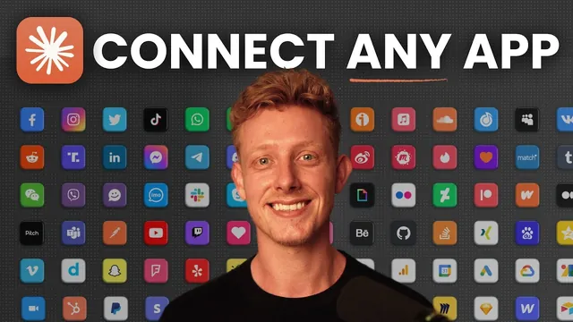

클릭 한 번으로 아무 앱이나 클로드에 붙이는 법

원본 영상 보기 →
- 커넥터를 "관리"하는 게 아니라 "구독"하는 개념으로 바뀐다
- 네이티브 연결이 "있다"와 "실제로 쓸만하다"는 다른 문제다
- 컨텍스트 토큰은 눈에 보이지 않는 비용이다
한 줄 요약
Claude의 기본 커넥터와 커스텀 MCP가 가진 한계(연결 가능한 앱 부족, 유지보수 부담, 토큰 낭비, 팀 관리 어려움)를 한 번에 해결해주는 메타 커넥터 "Composio"를 8가지 이점 중심으로 소개하는 영상.
전체 내용 정리
Claude 기본 커넥터의 한계와 Composio라는 해결책
Claude로 업무를 자동화하려면 소프트웨어와 인터넷에 연결하는 것이 필수인데, Claude의 기본 커넥터는 지원하는 앱이 제한적이고 기능도 부족하다. 커스텀 MCP를 직접 만들면 설정과 유지보수가 어렵고 토큰을 많이 소모하며, 팀 단위로 커넥터를 관리하는 것은 더 골치 아프다. 이 영상은 이런 문제를 해결하는 "Composio"라는 하나의 커넥터를 소개한다. Composio는 Claude나 다른 AI 서비스에 연결해두면 1000개가 넘는 소프트웨어에 손쉽고 즉각적으로 접근할 수 있게 해주는 일종의 "메타 커넥터"다. 발표자는 스폰서 영상이 아니며, 지난 몇 주간 팀과 함께 실제로 사용해본 뒤 유용하다고 판단해 소개한다고 밝힌다.
로그인 한 번으로 끝나는 연결, 그리고 실제 작동 방식
Composio의 가장 큰 장점 중 하나는 사용 편의성이다. 대부분의 앱은 API 키를 복사해 붙여넣거나 복잡한 MCP 설정을 할 필요 없이 로그인 한 번이면 연결이 끝난다. 예를 들어 Claude에게 "노션에 있는 영상 개요를 분석하고, 유튜브 인트로 작성 스킬을 이용해 인트로를 써준 뒤, 그 인트로 변형본을 구글 문서에 추가해줘"라고 지시하면, Composio 커넥터가 이 요청을 자동으로 알맞은 도구로 라우팅한다. 먼저 노션에 접근하고, 스킬로 인트로를 작성한 다음, 다시 Composio를 통해 구글 문서에 접근하는데, 이 구글 문서 연동은 Claude의 기본 연결 기능으로는 불가능한 부분이다.
네이티브로는 연결할 수 없는 1000개 이상의 앱
Composio를 쓰는 두 번째 큰 이유는 Claude가 기본으로 연결하지 못하는, 아주 흔하고 유용한 앱들까지 연결해준다는 점이다. Google Sheets, Google Drive, Google Docs, Google Analytics, Google Slides를 포함한 구글 제품군 전체, 그리고 연결이 까다로운 마이크로소프트 제품군도 모두 지원한다. 여기에 Meta Ads, Google Ads, LinkedIn Ads 같은 광고 플랫폼, 그리고 연결이 악명 높게 어려운 Instagram, LinkedIn 같은 소셜미디어 앱도 붙일 수 있다. WhatsApp, X(트위터), YouTube 역시 연결 가능하며 대부분 로그인 화면 하나로 끝난다. 발표자는 아직 Composio에서 지원하지 않는 앱을 본 적이 없다고 말한다.
같은 앱이라도 기능이 더 많은 이유: Gmail 사례
일부 앱은 Claude에도 이미 연결되어 있거나 MCP로 직접 설정할 수 있지만, Composio는 이런 경우에도 우위를 가진다. Composio는 AI 에이전트를 위해 MCP와 커넥터의 성능을 최적화하는 데 집중하기 때문에, 네이티브 커넥터보다 더 많은 툴콜(tool call, 실행 가능한 기능)을 제공하는 경우가 많다. 대표적인 예가 Gmail이다. Claude 기본 Gmail 커넥터는 27개의 툴콜만 제공하고 실제로 이메일을 발송하는 기능조차 없는 반면, Composio의 Gmail 커넥터는 63개의 툴콜을 제공하며 이메일 발송도 가능하다.
같은 소프트웨어의 계정을 여러 개 동시에 연결
Composio에서는 같은 소프트웨어의 여러 계정을 동시에 연결할 수 있는데, 이는 Claude에서 기본적으로 불가능한 기능이다. 발표자는 업무용과 개인용 Gmail 계정 두 개를 모두 연결해두고, Claude에게 "내 두 이메일 받은편지함을 모두 분석해서 지난 24시간 안에 온 것 중 중요한 걸 표시해줘"라고 요청하면 Composio가 두 계정을 모두 분석해 중요한 메일을 표시해준다는 예시를 보여준다. 이 방식은 팀원 각자의 이메일이나 계정을 함께 연결해 활용하는 데도 응용할 수 있다.
어떤 AI 도구에서도 재사용 가능, 유지보수는 자동
Composio 계정에서 한 번 연결을 설정해두면, Codex든 Grok이든 Claude든 원하는 어떤 AI 도구에도 Composio 커넥터만 붙이면 동일한 소프트웨어 연결을 그대로 쓸 수 있다. 즉 연결 설정은 한 번만 하면 모든 AI 제공자에서 재사용된다. 또한 Claude의 기존 커넥터는 몇 주마다 재연결이 필요하고, 커스텀 MCP는 직접 업데이트하고 관리해야 하지만, Composio는 이 모든 것을 자동으로 처리한다. 소프트웨어에 자동으로 재연결하고, MCP를 최신 상태로 유지하며, 사용자가 아무것도 하지 않아도 기능을 점점 더 효율적으로 개선한다.
컨텍스트 토큰 낭비 문제와 실제 요금제
Claude Desktop에 설치된 모든 커넥터나 MCP는 실제로 사용하지 않아도 새 대화를 열 때마다 컨텍스트 윈도우에 로드된다. 발표자는 자신이 대부분의 MCP 커넥터를 이미 비활성화했는데도 새 대화에서 아무것도 사용하지 않은 채로 MCP 도구에만 1만 토큰이 소모된 걸 보여준다(Claude Code 탭의 /context 명령으로 채팅당 MCP 토큰 사용량을 확인할 수 있다). Composio는 30~50개의 개별 MCP 대신 단 하나의 MCP만 연결해두고, 실제 작업에 필요한 것만 그때그때 라우팅해서 쓰기 때문에 훨씬 토큰 효율적이다. 다만 일부 커넥터는 아직 완벽하게 작동하지 않는 한계도 있으며, Composio 팀이 계속 개선해나가는 중이라고 언급한다. 요금제는 월 10만 툴콜까지 무료이며 팀원 3명까지 함께 쓸 수 있고, 이를 초과하면 월 29달러부터 유료 전환된다.
팀 단위로 안전하게 커넥터를 공유하는 방법
비즈니스에서 팀 단위로 AI와 커넥터를 쓰려는 경우 Composio가 특히 유용하다. Claude나 다른 AI 도구에서 팀원에게 특정 소프트웨어 접근권을 주려면 보통 로그인 정보와 비밀번호를 공유해야 하고, 세밀한 권한·통제 설정도 부족하다. Composio는 관리자가 필요한 모든 소프트웨어에 로그인해둔 뒤, 비밀번호나 로그인 정보를 공유하지 않고도 Composio 커넥터 자체를 팀원과 공유할 수 있게 해준다. 팀원을 같은 Composio 계정에 연결해 각자의 소프트웨어를 로그인하게 할 수도 있고, 각 소프트웨어별로 어떤 행동이 가능하고 불가능한지 범위(scope)를 설정할 수도 있다. 더 세밀한 통제가 필요하면 "Composio for Teams"라는 별도 옵션도 있다(발표자는 이 기능은 아직 직접 사용해보지 않았다고 밝힘).
시작하는 방법
Composio는 시작이 간단하다. 계정을 만든 뒤 "Connect Apps"에서 필요한 앱들을 연결하고, "Connect to my agent"에서 연결하려는 AI 플랫폼을 선택하면 설정 방법을 안내해준다. Claude Desktop의 경우 "Browse connectors"에서 Composio를 검색해 계정을 연결하면 즉시 모든 소프트웨어에 접근할 수 있게 된다.
핵심 인사이트
- 커넥터를 "관리"하는 게 아니라 "구독"하는 개념으로 바뀐다: 앱마다 API 키를 발급받고 MCP를 직접 유지보수하는 대신, 로그인 한 번으로 연결하고 나머지는 Composio가 자동으로 최신 상태를 유지해준다. 반복 업무를 혼자 처리하는 사람일수록 이 유지보수 부담을 없애는 게 시간 절약에 직결된다.
- 네이티브 연결이 "있다"와 "실제로 쓸만하다"는 다른 문제다: Gmail처럼 이미 연결돼 있는 앱도 발송 같은 핵심 기능이 빠져 있을 수 있다. 도구를 고를 때 "연결 가능 여부"뿐 아니라 "몇 개의 기능(tool call)까지 지원하는지"를 확인해야 한다는 점을 보여준다.
- 컨텍스트 토큰은 눈에 보이지 않는 비용이다: 쓰지도 않는 MCP가 새 대화마다 수천 토큰을 깔고 시작한다는 사실은 자동화 세팅을 늘릴수록 체감 속도 저하와 비용 증가로 이어질 수 있음을 시사한다. 커넥터 개수를 늘리기 전에 "얼마나 자주 쓰는가"를 먼저 따져야 한다.
오늘 당장 해볼 것
- Claude Code나 Claude Desktop에서
/context명령을 입력해 지금 연결된 MCP·커넥터가 대화당 토큰을 얼마나 잡아먹고 있는지 확인해본다. - Composio(composio.dev)에 무료 계정을 만들고 "Connect Apps"에서 평소 자주 쓰는 앱(예: Gmail, Google Docs, Notion) 하나를 로그인만으로 연결해본다.
- 팀원이나 협업하는 사람과 함께 쓰는 소프트웨어가 있다면, 비밀번호를 공유하는 대신 Composio 커넥터 공유로 대체할 수 있는지 검토해본다.